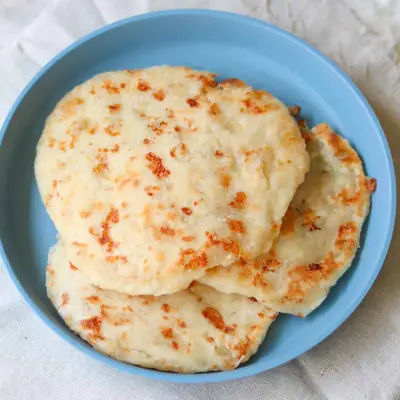

Cottage cheese protein wraps

Ingredients
- 1 1/4 cup self-rising flour (180g)
- 3/4 cup full fat cottage cheese (180g)
- warm water, as needed
- butter, for greasing the pan
- 1 teaspoon garlic powder, onion powder, Italian seasoning, any seasonings you like
Steps
- In a medium bowl, combine cottage cheese, self-rising flour, seasonings and salt (if using). Stir with a spoon until everything comes together into a rough dough.
- Lightly flour your hands and shape the dough into one big ball. Then cut it into 4 equal pieces.
- On a lightly floured surface, use a rolling pin to roll each piece into a thin circle.
- Heat a non-stick skillet over medium heat and add a small pat of butter. Once melted, place a rolled-out wrap in the pan. Cook for 2-3 minutes per side, until golden brown spots appear and the wrap is cooked through. Add more butter as needed between wraps.
Recipe by Min Kwon · Kidfriendly Meals, from MJ and Hungryman. Saved here for personal use; the original has the full notes, tips and photos. Open original